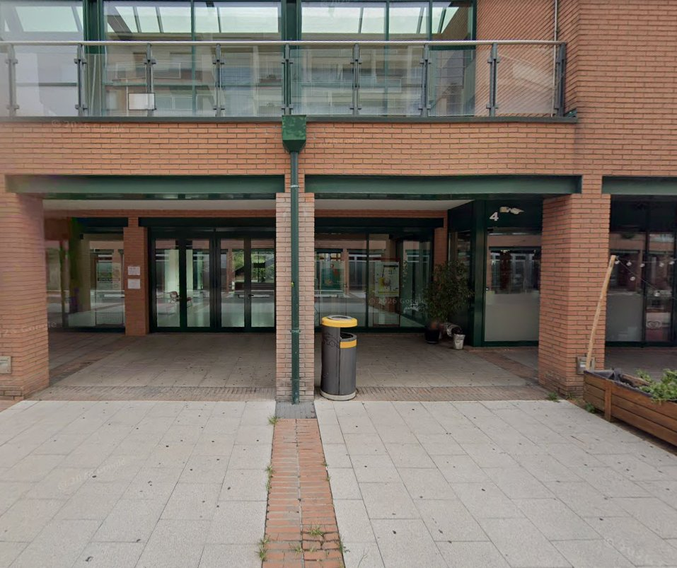
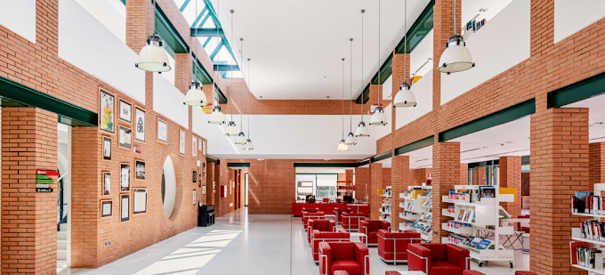

Racconto personale dell'esperienza di stage settimana per settimana, tra emozioni, attività e crescita
"L'esperienza si è svolta presso la biblioteca pubblica di Paderno Dugnano, un ambiente tranquillo e organizzato, frequentato da studenti, adulti e anziani. Per raggiungere il luogo di lavoro dovevo prendere il treno e poi il pullman, essendo distante da casa mia. Nonostante questo, sono sempre riuscito a organizzarmi e ad arrivare puntuale."
— Jacopo Martin, Diario PCTO 2025
Il primo giorno è stato dedicato alla scoperta della biblioteca: ho conosciuto Giorgia, la mia tutor aziendale, e gli altri bibliotecari. Mi sono state spiegate le procedure di prestito, come funziona il sistema di catalogazione e come sono organizzati gli spazi. L'atmosfera era serena e accogliente, il che mi ha fatto sentire subito a mio agio.

Durante la prima settimana ho partecipato alle attività principali: gestione del prestito e della restituzione dei libri agli utenti, sistemazione dei volumi negli scaffali seguendo l'ordine corretto, e lavoro al banco aiutando le persone. Ho imparato rapidamente le procedure interne e ho iniziato a lavorare con sempre maggiore autonomia.
Alcune attività prevedevano anche uno sforzo fisico, come spostare libri pesanti o rimanere in piedi per molte ore. Questo mi ha aiutato a capire la dimensione pratica e concreta del lavoro in biblioteca.

La fine della prima settimana ha portato una piacevole sorpresa: la catalogazione dei vinili. Non sapevo che la biblioteca conservasse una collezione di dischi in vinile. È stata un'attività che richiedeva attenzione e precisione particolari, diversa dalle altre mansioni più dinamiche. Ho trovato affascinante lavorare con questi materiali storici e capire come vengono conservati e classificati.
Nella seconda settimana mi sono sentito molto più sicuro. Ho gestito il banco prestiti con meno supervisione, continuato la catalogazione dei vinili e aiutato a riorganizzare la sezione ragazzi. Ho potuto mettere in pratica quanto appreso nella prima settimana e rendermi conto dei progressi fatti.
Ho sviluppato un buon rapporto con il personale e ho capito l'importanza di comunicare chiaramente con i colleghi per svolgere il lavoro in modo efficiente.
L'ultimo giorno è stato dedicato ai saluti e a un momento di riflessione con la tutor Giorgia. Mi ha fatto i complimenti per il lavoro svolto e mi ha detto che sono stato un collaboratore affidabile e puntuale. Ho lasciato la biblioteca con la sensazione di aver vissuto un'esperienza autentica e formativa.
La catalogazione dei vinili è stata l'attività più tecnica e precisa dello stage. Ogni disco richiedeva la compilazione di una scheda con informazioni come: artista, titolo, anno di produzione, stato di conservazione, etichetta discografica e genere musicale. Ho imparato ad usare il sistema di archiviazione della biblioteca e a mantenere la coerenza dei dati inseriti. Piccoli errori avrebbero compromesso la reperibilità del materiale, quindi l'attenzione doveva essere massima.
Questa attività mi ha sorpreso perché non immaginavo di trovare una collezione di vinili in una biblioteca pubblica. Mi ha fatto riflettere sull'importanza della conservazione culturale e su come anche materiali "vecchi" possano avere un valore enorme. Dal punto di vista informatico, ho capito quanto sia importante strutturare bene un database — anche cartaceo — per rendere le informazioni accessibili e utili.
Concentrato, curioso e soddisfatto. Per la prima volta durante lo stage ho sentito che stavo facendo qualcosa di unico — preservare pezzi di storia musicale. È stata una di quelle attività silenziose ma piene di significato.
"In conclusione, questa esperienza è stata molto positiva e sorprendentemente piacevole. Mi sono divertito e mi sono trovato bene, anche grazie all'ambiente tranquillo e al fatto di non essere da solo. Anche se non è direttamente collegata al mio indirizzo di studi, mi ha permesso di capire meglio il funzionamento di un ambiente lavorativo."